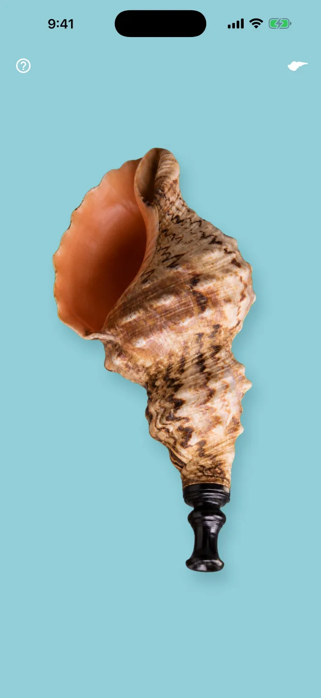
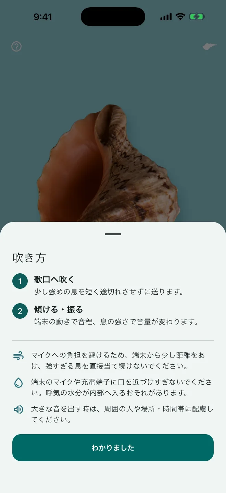
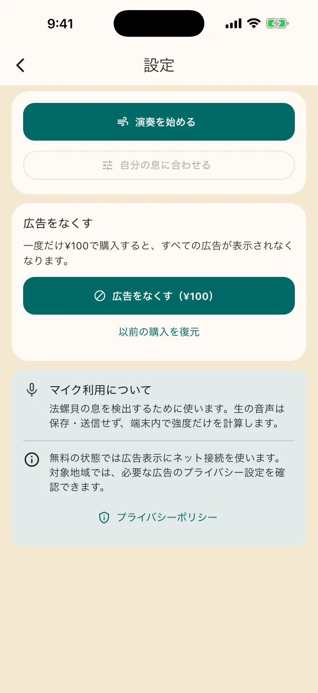
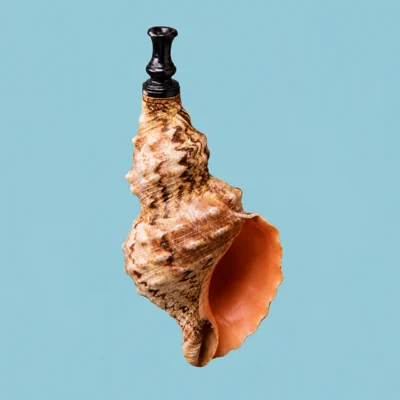

息で音を鳴らす
歌口を端末のマイクへ向け、ほどよい息を送ります。息の強さに合わせて音量が変わります。
息と動きで鳴らす、手のひらの楽器
上手に吹くと、良い音が出ます。
「法螺貝」は、iPhoneやiPadへ息を吹きかけて楽しむ小さな楽器アプリです。うまく鳴る時も、鳴らない時も、あなただけの一音を探してみてください。
法螺貝に興味があっても、本物を用意して音を出すのは簡単ではありません。このアプリなら、スマートフォンへ息を吹きかけ、傾けたり振ったりするだけで、法螺貝の音を探す遊びを気軽に始められます。
毎回同じように鳴るとは限りません。その少し不思議な手応えも、このアプリの楽しさです。
難しい設定を覚えるより、まずは吹いて、動かしてみてください。
歌口を端末のマイクへ向け、ほどよい息を送ります。息の強さに合わせて音量が変わります。
端末を前後へ傾けると音程が変わります。素早く振ると、一時的な音の揺らぎが加わります。
いつでも同じ音が出るとは限りません。うまく鳴った時の気持ちよさも、鳴らない時の面白さも楽しめます。
画面の法螺貝は、移動、拡大縮小、回転ができます。見た目の配置は音の鳴り方に影響しません。
必要な案内は「？」と設定画面へまとめ、演奏画面には大きな法螺貝だけを置きました。



安全に楽しむために：強すぎる息を直接当て続けないでください。呼気の水分がマイクや充電端子へ入らないよう、端末から少し距離をあけてください。大きな音を出す時は、周囲の人や場所、時間帯へご配慮ください。
無料の状態では、設定画面と「法螺貝のお手入れ」に広告が表示されます。日本のApp Storeでは、一度だけ100円で購入すると、すべての広告をなくせます。サブスクリプションではありません。
実際の価格はApp Storeの購入画面でご確認ください。
マイクは息を判定するために使います。録音するためではありません。
iOS／iPadOS 13.0以降のiPhoneとiPadに対応しています。端末によってマイクの位置や反応が異なります。
法螺貝のマイク利用が許可されているか確認してください。起動後の周囲音の確認中は約1.5秒間静かにし、反応するマイクの位置へ、強すぎない息を一定に送ってください。設定の「音を確認」でスピーカーも確認できます。
右上の法螺貝アイコンから設定を開き、「自分の息に合わせる」をお試しください。画面の合図に合わせ、普段の強さで約1秒ずつ3回吹きます。
演奏だけなら接続は不要です。無料版の広告表示、広告削除の購入、以前の購入の復元には接続が必要です。
購入時と同じApple Accountを使用し、設定の「以前の購入を復元」を選んでください。
録音、利用者アカウント、クラウド保存・同期には対応していません。生の音声や端末の動きも保存・送信しません。
演奏していない時に一定以上の衝撃を検出すると、法螺貝を叩いたような、こもった打音が鳴ります。端末を落としたり強く叩いたりしないでください。

不具合やご要望は、GitHubの公開問い合わせページからお知らせください。氏名、メールアドレス、購入情報などの個人情報は書き込まないでください。
利用している端末、OSのバージョン、発生した状況を、個人情報を含めずにお知らせください。
上手に吹くと、良い音が出ます。